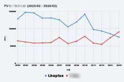
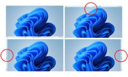
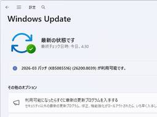
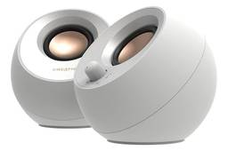
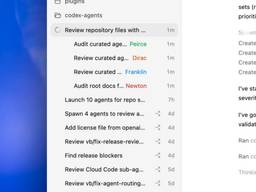

窓の杜
https://forest.watch.impress.co.jp
Windowsオンラインソフトのライブラリと最新情報が充実
フィード
「Google 検索」で「たけのこの里」と検索すると……？ 「きのこの山」にも対応／ちゃんと物理演算も行う気合の入れよう【やじうまの杜】 2
2
窓の杜
「やじうまの杜」では、ニュース・レビューにこだわらない幅広い話題をお伝えします。
1時間前
もう「Windows Update」はユーザーの邪魔をしない ～Microsoftが改善を約束／都合が悪ければ必要なだけ延期、OS再起動の催促も減らす 3
窓の杜
米Microsoftは3月20日（現地時間）、公式ブログ「Windows Insider Blog」で、「Our commitment to Windows quality」と題する記事を公開した。Windowsの品質を改善する取り組みの一環として、「Windows Update」による混乱を軽減する措置を盛り込むことがアナウンスされている。
3時間前

圧縮・解凍ソフトの人気変動に注目、長年の「Lhaplus」首位がついに陥落 ～窓の杜アクセスランキング［2026/3/16～2026/3/22]【記事アクセスランキング】
窓の杜
前週に閲覧数の多かった記事を、上位10位までレポートします。
4時間前

タスクバーの縦・上置きにも対応へ ～Microsoft、今年はOSの“作りこみ”に集中すると宣言／きびきびと動作、ノイズを減らし、透明性を確保し、ユーザーに選択肢を 2
窓の杜
米Microsoftは3月20日（現地時間）、公式ブログ「Windows Insider Blog」で、「Our commitment to Windows quality」と題する記事を公開した。この記事ではWindowsの品質を向上させるための新しい方針が示されており、その一環としてタスクバーを含むユーザーインターフェイスの改善がアナウンスされている。
6時間前
内蔵用HDD/SSDを外付けドライブにできるHDDスタンドが最安1,949円、Amazonでセール中【本日みつけたお買い得情報】
窓の杜
Amazon.co.jpのORICOストアでは現在、同社のスタンド型HDDケースのセールが行われています。
6時間前
UGREENの両端USB Type-Cケーブルが最大43％OFF！Amazonでセール中【本日みつけたお買い得情報】 1
窓の杜
Amazon.co.jpのUGREENストアでは現在、同社のUSBケーブルのセールが行われています。両端USB Type-Cタイプのケーブル各種が割引価格で販売されています。
6時間前

今月に入って3度目の定例外パッチ「KB5085516」が公開、Microsoft アカウント問題を修正／「Windows 11 バージョン 25H2/24H2」向け
窓の杜
米Microsoftは3月21日（現地時間）、「Windows 11 バージョン 25H2/24H2」向けの更新プログラム「KB5085516」を公開した。今月に入って3回目の定例外（Out-of-band：OOB）リリースとなっている。
7時間前
「Google Chrome」に26件もの脆弱性修正、致命的なものも ～「Microsoft Edge」も更新／アップデートの適用を 10
窓の杜
米Googleは3月18日（現地時間、以下同）、デスクトップ向け「Google Chrome」の安定（Stable）チャネルをアップデートした。現在、Windows/Mac環境にv146.0.7680.153/154が、Linux環境にv146.0.7680.153が展開中。
8時間前

ExcelのLEFT/MID/RIGHT関数は複雑すぎる！ もっと楽に文字列を分割・抽出する関数【残業を減らす！Officeテクニック】
窓の杜
1つのセルに複数の情報が入った表を扱うことがありますよね。記号やスペースなどで区切られていることが一般的です。
9時間前
生成AIツールを賢く活用するアイデア交流の場「Google AI学生コミュニティ」の参加登録が開始／インターンシッププログラム「キャンパスアンバサダー」の募集も
窓の杜
Googleは3月18日（日本時間）、全ての大学生および大学院生を対象とした「Google AI学生コミュニティ」の参加登録受付を開始した。このコミュニティは、昨年開催された「Google AI学生アンバサダープログラム」の主な交流の場であったもので、Discordを拠点とした自由なコラボレーション空間となっている。全国の学生同士でGeminiなどの生成AIツールを賢く活用するアイデアを交換し、学生自身の可能性を広げるための機会を提供することを目的としている。
9時間前
「Gemini in Chrome」の対応言語が拡大 ～日本語を含む50以上の言語で利用可能に／米国に加え、カナダ、ニュージーランド、インドで利用可能 3
窓の杜
米Googleは3月13日（現地時間）、「Gemini in Chrome」のアップデートを発表した。日本語を含む50以上の言語を新たに追加サポートし、米国に加え、カナダ、ニュージーランド、インドでAIとのやり取りができるようになる。
4日前
人気のフリーソフトはSnapdragon Xにネイティブ対応しているのか？ ARM64版ソフトを探してみた 17
窓の杜
本連載をご覧いただいている方の中には、Copilot+ PCをいち早く入手すべく、Snapdragon X搭載PCを購入した方もいらっしゃると思う。Arm版Windows 11には「Prism」と名付けられた強力なx64/x86エミュレーターが搭載されており、ほとんどのソフトウェアは問題なく動作する。
4日前
料理の「しんどさ」を解消するため“薬”と“スパイス”の調合方法を指南書が発売／『台所には薬箱とスパイスがあるといい 料理迷子のための仕組み化レシピ』【Book Watch/ニュース】
窓の杜
（株）インプレスは3月6日、インプレス NextPublishingより『台所には薬箱とスパイスがあるといい 料理迷子のための仕組み化レシピ』（三條 凛花 著）を発売した。紙書籍版の販売価格は2,100円（税別）、電子書籍版の販売価格は1,450円（税別）。
4日前
AIノートブック「Copilot Notebooks」が刷新、学習利用・コラボを強化して一般提供／まずは商用ユーザーに 4
窓の杜
米Microsoftは3月12日（現地時間）、AIノートブック「Copilot Notebooks」のアップデートを発表した。「Microsoft 365 Copilot」アプリと「OneNote」で、新しいエクスペリエンスが一般提供（GA）される。
4日前
“ローグライクカードゲーム”って何だ？ 「Slay the Spire」を遊んで確かめてみた【石田賀津男の『酒の肴にPCゲーム』】 22
窓の杜
3月6日、「Slay the Spire 2（スレイ・ザ・スパイア2）」というゲームが発売された。前作「Slay the Spire」は、オリジナリティあふれるゲーム内容が好評で、PCのみならず家庭用ゲーム機にも移植され、世界中で広く人気を博している。
4日前
クラシック「Outlook」がクラッシュし、セーフモードで起動する現象は仕様／Microsoftが声明を発表。回避策も 5
窓の杜
3月12日頃より、クラシック版「Outlook」アプリがクラッシュし、セーフモードで起動するように促すメッセージが表示されることがある。米Microsoftは3月17日（現地時間）、サポートページでこの問題に関する記事を公開した。
4日前
ゲームの画質をフォトリアルに向上させる「DLSS 5」が発表されるも『顔が別人だ』と批判。大喜利にも発展／【やじうまの杜】 3
窓の杜
“やじうまの杜”では、ニュース・レビューにこだわらない幅広い話題をお伝えします。
4日前
Windows版「Spotify」アプリに音質劣化なしの「専用モード」が追加／“ビットパーフェクト”再生を実現、「Premium」ユーザー限定で提供 20
窓の杜
米Spotifyは3月17日（現地時間）、Windowsデスクトップ版「Spotify」アプリに「専用モード」を導入したと発表した。「Premium」ユーザー（月額1,080円など）限定で提供される。
4日前
平成を再現！ テレビをビデオテープに録画したように画像を劣化させるツールが話題／細部にまでこだわったパラメーターで思った通りの劣化具合を実現できる【やじうまの杜】 2
窓の杜
“やじうまの杜”では、ニュース・レビューにこだわらない幅広い話題をお伝えします。
4日前

「Creative Pebble V3」が20％OFFの4,384円！AmazonでCREATIVEのスピーカーが安い【本日みつけたお買い得情報】
窓の杜
Amazon.co.jpのCREATIVE（クリエイティブメディア）のストアでは現在、同社のスピーカーやヘッドホンのセールが行われています。
4日前

OpenAI、コーディングエージェント「Codex」に新機能「サブエージェント」を正式導入／雑事を片付ける子分を複数生成し、並列実行 24
窓の杜
米OpenAIは3月4日（現地時間）、コーディングエージェント「Codex」に新機能「サブエージェント」（Subagents）を正式導入したと発表した。現在、「Codex」アプリと「Codex CLI」で利用可能。間もなく各社の統合開発環境（IDE）でも、拡張機能を介して利用できるようになる。
4日前
クランプで机やモニターに固定できるUSBハブが最安1,716円！Amazonでセール中【本日みつけたお買い得情報】 1
窓の杜
Amazon.co.jpのORICOストアでは現在、同社のUSBハブのセールが行われています。
4日前
Microsoft、「PowerShell 7.6」を一般公開 ～「.NET 10」ベースの長期サポート版／エンジンの信頼性向上やネイティブコマンドハンドリング、タブ補完の改善に取り組む 26
窓の杜
米Microsoftは3月18日（現地時間）、「PowerShell 7.6」を一般公開した。「.NET 10」をベースとした「長期サポートリリース」（LTS）で、通常より長い3年間のサポート期間が設けられている。
4日前
Mozilla、「Firefox」の新しいマスコットキャラクター「Kit」を発表／Webブラウジングに温かみと親しみをもたらす相棒 184
窓の杜
Mozillaは3月17日（米国時間）、「Firefox」の新しいマスコットキャラクター「Kit」を発表した。“Webブラウジングに温かみと親しみをもたらす相棒”として、「Firefox」に導入されるという。
4日前

追加料金なしでの「Copilot」提供が縮小、Microsoftが2026年4月15日より仕様変更へ／大規模組織では「Microsoft 365 Copilot」追加ライセンスの購入が必要に 127
窓の杜
米Microsoftは3月17日（現地時間）、「Microsoft 365 Copilot Chat」で仕様変更を実施する方針を発表した。「Microsoft 365 Copilot」アドオンライセンスのないユーザーに対し、2026年4月15日より適用される。
4日前
無料の3D CG統合環境「Blender」v5.1が公開 ～機能やパフォーマンスの改善が中心／ 3
窓の杜
蘭Blender Foundationは3月17日（現地時間）、「Blender 5.1」を公開した。本バージョンでは前回のメジャーアップデート直後であるためか、新機能の追加より改善点が多い印象だ。
5日前
AIを自在に使いこなす最前線の開発者が語る「指揮者」としてAIを使う方法の解説書／『AIの指揮 AI時代の変化する組織の姿、新時代のAI拡張型ワークフローについて』が発売【Book Watch/ニュース】 2
窓の杜
（株）インプレスは3月13日、インプレス NextPublishingより『AIの指揮 AI時代の変化する組織の姿、新時代のAI拡張型ワークフローについて』（石川 雅康／山崎 泰宏 著）を発売した。紙書籍版の販売価格は2,600円（税別）、電子書籍版の販売価格は1,800円（税別）。
5日前